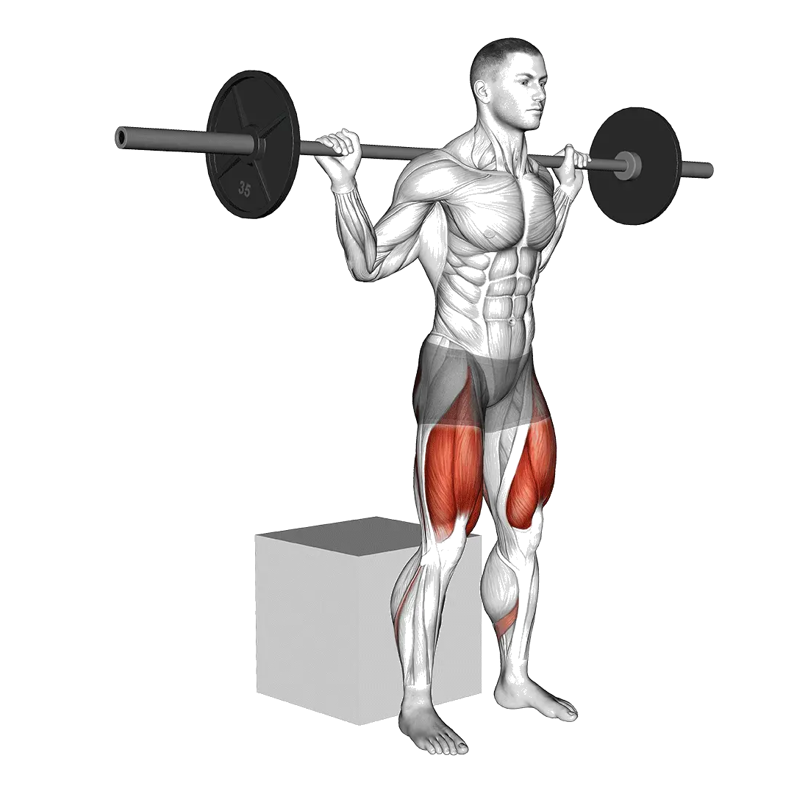

中級の平均重量
平均的な中級者の目安です。
男性
337 lb
女性
191 lb
ボックススクワット 平均重量 [1RM]
| レベル | ||
|---|---|---|
| 基礎 | 152 lb | 83 lb |
| 初級 | 233 lb | 130 lb |
| 中級 | 337 lb | 191 lb |
| 上級 | 460 lb | 264 lb |
| プロ | 595 lb | 344 lb |
注：これらの基準は平均的なリフターを基準にした1RMの目安です。体重や年齢などの個人的要因によって異なる場合があります。より詳細なデータは以下のとおりです。
ボックススクワット 基準重量(lb)
男性・体重別(lb)データ [1RM]
| 体重 | 基礎 | 初級 | 中級 | 上級 | プロ |
|---|---|---|---|---|---|
| 110 | 76 | 127 | 196 | 279 | 372 |
| 120 | 90 | 145 | 218 | 305 | 402 |
| 130 | 104 | 163 | 239 | 330 | 431 |
| 140 | 117 | 180 | 260 | 355 | 459 |
| 150 | 131 | 197 | 280 | 378 | 485 |
| 160 | 144 | 213 | 300 | 401 | 511 |
| 170 | 158 | 229 | 318 | 422 | 535 |
| 180 | 171 | 245 | 337 | 443 | 559 |
| 190 | 183 | 260 | 354 | 464 | 582 |
| 200 | 196 | 275 | 372 | 483 | 604 |
| 210 | 208 | 289 | 389 | 503 | 625 |
| 220 | 220 | 303 | 405 | 521 | 646 |
| 230 | 232 | 317 | 421 | 539 | 666 |
| 240 | 244 | 331 | 437 | 557 | 686 |
| 250 | 255 | 344 | 452 | 574 | 705 |
| 260 | 266 | 357 | 467 | 591 | 723 |
| 270 | 277 | 370 | 481 | 607 | 741 |
| 280 | 288 | 382 | 496 | 623 | 759 |
| 290 | 299 | 395 | 509 | 639 | 776 |
| 300 | 309 | 407 | 523 | 654 | 793 |
| 310 | 319 | 418 | 536 | 669 | 809 |
男性・年齢別データ [1RM]
| 年齢 | 基礎 | 初級 | 中級 | 上級 | プロ |
|---|---|---|---|---|---|
| 15 | 129 | 198 | 287 | 392 | 507 |
| 20 | 148 | 227 | 328 | 448 | 580 |
| 25 | 152 | 233 | 337 | 460 | 595 |
| 30 | 152 | 233 | 337 | 460 | 595 |
| 35 | 152 | 233 | 337 | 460 | 595 |
| 40 | 152 | 233 | 337 | 460 | 595 |
| 45 | 144 | 221 | 320 | 436 | 565 |
| 50 | 135 | 207 | 300 | 410 | 530 |
| 55 | 125 | 192 | 277 | 379 | 490 |
| 60 | 114 | 175 | 253 | 346 | 447 |
| 65 | 103 | 158 | 229 | 312 | 404 |
| 70 | 92 | 142 | 205 | 280 | 363 |
| 75 | 83 | 127 | 184 | 251 | 324 |
| 80 | 74 | 114 | 164 | 224 | 290 |
| 85 | 66 | 102 | 147 | 201 | 260 |
| 90 | 60 | 92 | 133 | 181 | 234 |
女性・体重別(lb)データ [1RM]
| 体重 | 基礎 | 初級 | 中級 | 上級 | プロ |
|---|---|---|---|---|---|
| 90 | 57 | 96 | 147 | 209 | 278 |
| 100 | 63 | 103 | 156 | 220 | 291 |
| 110 | 69 | 110 | 165 | 230 | 303 |
| 120 | 74 | 117 | 173 | 240 | 314 |
| 130 | 79 | 124 | 181 | 249 | 325 |
| 140 | 84 | 130 | 188 | 258 | 334 |
| 150 | 89 | 135 | 195 | 266 | 344 |
| 160 | 93 | 141 | 202 | 274 | 353 |
| 170 | 97 | 146 | 208 | 281 | 361 |
| 180 | 101 | 151 | 214 | 288 | 369 |
| 190 | 105 | 156 | 220 | 295 | 376 |
| 200 | 109 | 161 | 226 | 301 | 384 |
| 210 | 113 | 165 | 231 | 307 | 391 |
| 220 | 117 | 170 | 236 | 313 | 397 |
| 230 | 120 | 174 | 241 | 319 | 404 |
| 240 | 124 | 178 | 246 | 325 | 410 |
| 250 | 127 | 182 | 251 | 330 | 416 |
| 260 | 130 | 186 | 255 | 335 | 422 |
女性・年齢別データ [1RM]
| 年齢 | 基礎 | 初級 | 中級 | 上級 | プロ |
|---|---|---|---|---|---|
| 15 | 71 | 111 | 163 | 225 | 293 |
| 20 | 81 | 127 | 186 | 257 | 335 |
| 25 | 83 | 130 | 191 | 264 | 344 |
| 30 | 83 | 130 | 191 | 264 | 344 |
| 35 | 83 | 130 | 191 | 264 | 344 |
| 40 | 83 | 130 | 191 | 264 | 344 |
| 45 | 79 | 124 | 181 | 250 | 326 |
| 50 | 74 | 116 | 170 | 235 | 306 |
| 55 | 68 | 107 | 157 | 217 | 283 |
| 60 | 62 | 98 | 144 | 198 | 258 |
| 65 | 56 | 88 | 130 | 179 | 233 |
| 70 | 51 | 79 | 116 | 161 | 210 |
| 75 | 45 | 71 | 104 | 144 | 187 |
| 80 | 40 | 63 | 93 | 128 | 168 |
| 85 | 36 | 57 | 83 | 115 | 150 |
| 90 | 33 | 51 | 75 | 104 | 135 |
注：ジムのバーベルは基本的に44lbです。
記録と分析はShibaアプリで
重量、回数、成長の変化をまとめて確認できます。
テーブルの見方
| レベル | 説明 | 分布 |
|---|---|---|
| 基礎 | 正しいフォームを身につけ、1か月以上継続してトレーニングに励む。 | 下位 5% |
| 初級 | 6か月以上継続的にトレーニングに励む。 | 上位 80% |
| 中級 | ２年以上継続的にトレーニングに励む。 | 上位 50% |
| 上級 | 5年以上継続的にトレーニングに励む。 | 上位 20% |
| プロ | 5年以上当該メニューを専門にトレーニング。 | 上位 5% |